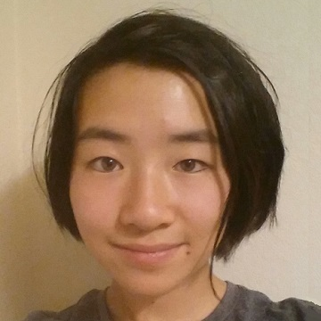
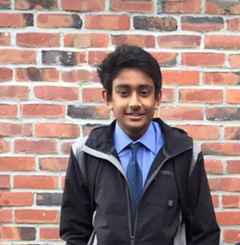

ABOUT THE TEAM
AVINASH J.
president
avinashkalpitjain@gmail.com
Hey there! I'm your president this year. I've been coding since elementary school, picking up web development when I was 12. I've taught more than a 100,000 people all around the World how to code. I'm looking forward to helping you all learn HTML, CSS, and Javascript. Just stop me if you ever have any questions! I'm always down to talk :) Can't wait to meet everyone and help you in any way you need over the next few months.

SHANNON D.
vice president
shannon_ding@yahoo.com
Hello - I'm excited to be your vice president for the 2017-18 school year! I "officially" started web dev in the summer before 8th grade but didn't take much initiative to continuously develop my skills. Now, I'm aiming to maintain several side projects and get more involved in backend. For the past three summers, I've been TAing for a web design camp, and I hope I can utilize these experiences to help members discover a newfound (and lasting) interest in web dev!

ARTHUR Z.
head of back-end
arthur.k.zhang@gmail.com
Hi there! I’ll be joining the LWD team this year to guide those of you interested in backend web development. As someone who landed an internship programming in languages exclusively learned through Udemy and Stack Overflow, I firmly believe that anyone can learn to code on their own. That being said, it’s a lot easier, and a lot more fun, to learn from a teacher! So if you’re interested in making your own ecommerce site, personal blog, or seeing the cool websites we’ll be creating, be sure to stop by!

TALHA K.
head of front-end
khan.talha360@live.com
What’s up guys! This year I will be your head of front-end helping to introduce you guys into the amazing world of html and css! I’ve been doing web design since 8th grade but still in the process of learning it to its fullest potential(searching things up on stackOverflow). I love going to hackathons competing and especially socializing with the people. If there’s one thing I cannot stress enough about coding, it’s gotta be having connections with the people around you for the future : ) All that aside, I cannot wait for this year of WebDev to begin!

KUNAL S.
secretary/treasurer
kunal@kunalsheth.info
Hello! I'm Web Dev's 2017-18 Secretary & Treasurer. I primarily work with JVM languages and also have experience with Linux, Python, and JavaScript. I spent last summer teaching Python, programming robots in Scala, and writing a full-stack Kotlin webapp at a startup. WebDev this year is going to be great as we make all sorts of cool and interesting websites - don’t miss out!